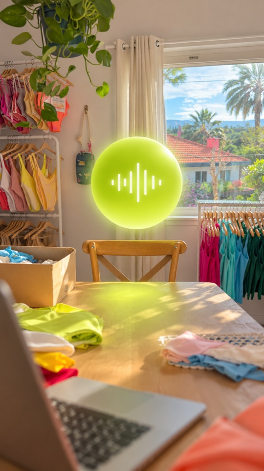
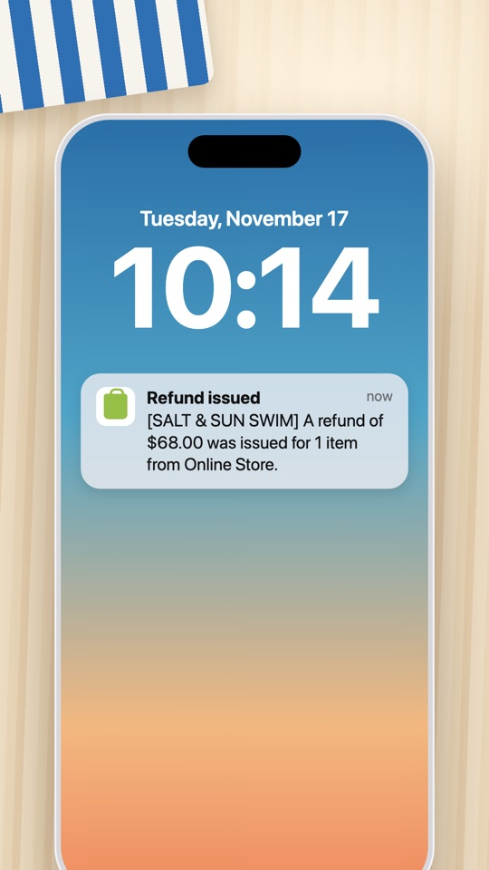
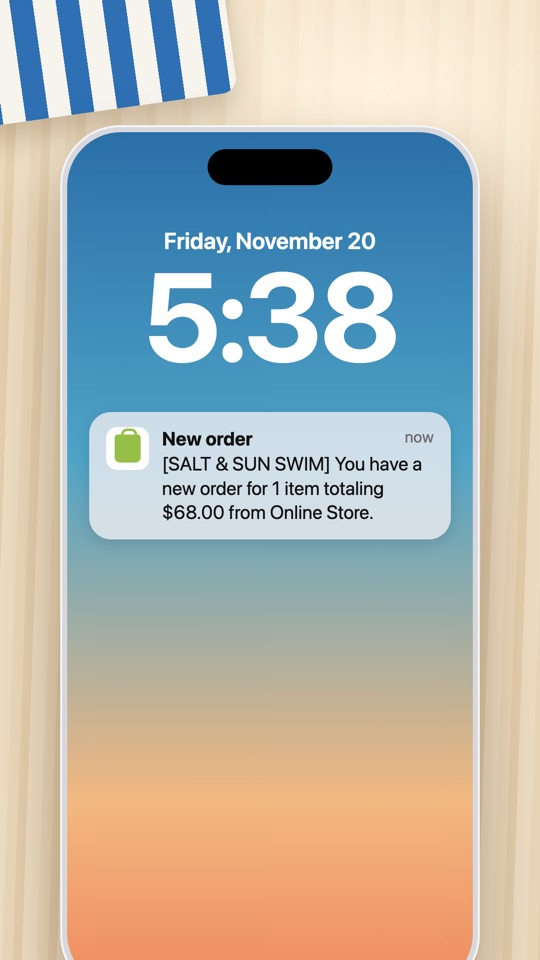
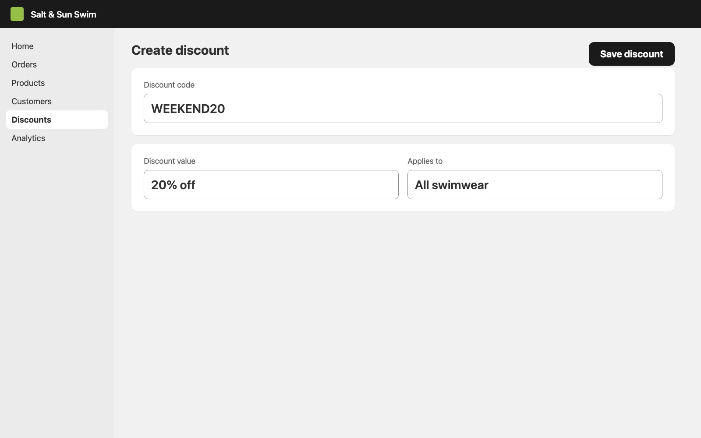

H217 · Team C · Seedance 2.5 technique: Multi-keyframe reference · round 4 (H220)
Ten frames, one room
The refund that sounds like a ka-ching, the freeze, the shopper's call and the full-price sale: each is a real-looking photo of her in the studio she runs her Shopify store from. Seedance fills in the motion between them, so the film can't drift into a room or a face we didn't approve.
Why keyframes fit this story. The guide says: "When the video must strictly follow the storyboard, use keyframe references. Input each storyboard as an independent reference image in order, and state in the first sentence of the prompt: 'Use Images X to X in order as keyframes.'" Prompt guide · Advanced · Keyframe reference With keyframes, "the generated video visuals will align relatively strictly with the input images", while a multi-panel storyboard "mainly provides a high-level plot reference". Task instructions · Unlocked: Reference tasks, storyboards, and keyframes
H215's draft failed where nothing was locked: the owner's shots lost the bikini studio because no shot bound her to it, and she never touched the product. Emile's story lives in a few exact moments: a refund banner, a Shopify discount page, a freeze with the orb, a shopper with that bikini in her cart, and a full-price banner. Each one is either text that has to be right or a set that has to stay hers. That calls for strict alignment, not loose inspiration.
Round 3 (H220, Emile's feedback): the shopper's call now reads as the past, seen through the orb, as Emile pictured it: "within the orbs… the orb takes you back in this world… a big switch… you kind of know this was the past." At 12s the orb swells into a window and she watches the shopper's call inside it (Image 6, new). At 16s the camera pushes through the orb's rim into that memory, lime glow at the edges (Image 7, new). At 20s the glow snaps away: back to now. Because she watches the shopper pack the beach bag, who is who and when is clear. She is now written as a woman who runs her own Shopify online store, all bikinis. The final prompt went through ByteDance's sd25-pe skill (loaded with the Skill tool this time). Both prompts and which to send.What changed.
Round 4 (independent check, H220 fix 1): Video 1 now has one role (the ending); Scout's voice is cut from it as Audio 4. The shopper stands by her bed, as Images 6 and 7 show. The visual negatives and the re-described wardrobe are gone. Ranges join with hard cuts. Scout's question and the shopper's answer now get 4 s each (12-16s, 16-20s), so every line is at or under 3 words a second. The trade-off, for Emile: the aha is 2 s (20-22s) and "Noted." is 1 s (22-23s). Your lines are unchanged word for word. The full-price sale is marked "Days later".
Round 5 (second independent check, H220 fix 2): the H229 ka-ching rule is now on the page and met: the ka-ching sits only at 0-2s (refund banner) and 23-25s (order banner), and Scout appears silently, with no pop on the orb. The bikini on the shopper's bed is her own, not the Sunset bikini, which she never bought; the Sunset bikini appears only with the owner (Images 8 and 9). Re-described props are cut, and the sd25-pe prompt is down to 738 words, under the guide's 741-word example. The gate line stays, with the reason given under What sd25-pe changed.
Round 2: every studio keyframe is now built on one room, her real Soul 2 studio photo (Image 11): red-tile roofs through the window, the hanging pothos, the cross-back chair. The garbled laptop text is gone, the shopper beat is split in two, and the prompt is trimmed to 541 words. See the scorecard.
Text 675 words (ours) · 841 (sd25-pe, the one to send, after the Nov 15 check)12 images (10 keyframes + 2 faces)1 video (4.5 s)4 audio (27.4 s total)seedance_2_5 · omni_reference (task type: reference)draft · 480p · 9:16 · 30 s · audio on90 credits planned (round 1 get_cost, 15 assets; re-quote with 17 before render)Stills: round 1 10 × 0.25, round 2 4 made = 3.5 credits; round 3: 0 new (the two memory-orb stills were already made on H217)
Reference assets, in upload orderUpload exactly in this order. Every chip in the prompt links here. The faces come after the keyframes because the guide's first sentence must read "Images 1 to 10 as keyframes"; each face is bound by role in the text.
<image1>
Keyframe 1 · 0-2s
Refund banner macro
The refund is the hook, so the banner words must be exact ("Refund issued", $68.00, SALT & SUN SWIM). The guide says exact text should come in as an image.
Ties her face to her own studio from her first word on. H215 lost the studio because no shot bound her to it.
gpt_image_2_6 job 49879701-03b2-4c01-8de8-3bde3173fa34 (v2, her real room)
<image3>
Keyframe 3 · 6-8s
Over the shoulder, discount page
The inner-voice beat only works if we see what she is about to do: a Shopify "Create discount" page, WEEKEND20, 20% off. Built from Image 4's exact angle, so the freeze lands on the same frame.
gpt_image_2_6 job 693d5e3f-bb04-4a94-a92a-256ac55e05d5 (v2, from Image 4 + discount screen)
<image4>
Keyframe 4 · 8-10s
The freeze, Scout pops in
Freezes, and the orb's size and place, are where models improvise most. This fixes the swimsuit in mid-air, her hand stopped and the orb at her shoulder. The screen is out of focus on purpose, with the focus on the orb.
Emile's "within the orbs" idea. The owner, in her own studio, watches the shopper's call inside the swollen orb: the shopper stands by her bed packing a beach bag, phone at her ear. One frame says who the shopper is, that it already happened and that the owner is seeing it now.
gpt_image_2_6 still made on H217 (memory-orb/orb-window.png), converted to JPEG; no new spend
<image7>
Keyframe 7 · 16-20s · new in round 3
Into the memory
The "big switch": the camera has gone through the orb's rim, so we are inside the past. A lime glow rings the frame, and the small lime sound-bar badge by her phone is Scout on the call. Same shopper, same striped tee, same bag as Image 6.
gpt_image_2_6 still made on H217 (memory-orb/lime-flashback.png), converted to JPEG; no new spend
<image8>
Keyframe 8 · 20-22s
The aha with the Sunset bikini
The H215 lesson: she never touched the product. Here she holds the exact bikini from the cart, in her own studio, with the mixed feeling Emile asked for.
gpt_image_2_6 job 5ac0d1a8-0c05-4971-b394-6d7a413d392d (v2, her real room)
<image9>
Keyframe 9 · 22-23s
Delete discount
The fix has to be seen in two seconds. A "Delete discount?" dialog is unmistakable; without it, the model would make up a UI.
It mirrors keyframe 1: her phone, now with "New order" for $68.00 at full price, in her studio. Its lock screen reads Friday 5:38, days after the Tuesday refund; the prompt says "Days later" so the jump reads. The payoff must read at a glance, so the banner is locked.
gpt_image_2_6 job abb9b854-01a6-4069-b151-2366484b0abd (v2, her real room)
<image11>
Identity
Owner face (Soul 2)
Her face and hair only. It is also the room every studio keyframe was rebuilt on, so face and room agree.
Plays exactly as it is, then its last frame holds to 30 s. Its sound is Scout's voice, cut out as Audio 4 so Video 1 keeps one role.
media cae62718-ec02-41f6-8e36-1de097e8427d
<audio1>
Owner voice: Elena
8.9 s (trimmed from 13.4 s at a natural pause, inside the guide's 5-10 s). An unrelated read, used for timbre, accent and pace only.
media e05a2ee1-0882-4e54-937b-ed2475948d4e (13.4 s; re-upload the 8.9 s cut before render)
<audio2>
Shopper voice: Serene
11.4 s, a calm young American voice.
media 4b121290-c867-44a1-8dc3-6046fb0efb15
<audio3>
Ka-ching
2.6 s. Plays at 0s, on the refund banner, and at 23s on the full-price sale. The same bell for money moving either way; the banner text says which.
media 45fb9d1d-0e34-4966-83b9-4d0f169fe660
<audio4>
New in round 4
Scout voice
4.5 s, the sound of Video 1 cut out locally (ffmpeg, no spend). Used for timbre, accent and pace only; Scout's words come from the prompt.
not uploaded yet: upload before render
The exact promptSplit into the guide's four parts Prompt guide · Basic prompting techniques. Dialogue uses "Character's line (emotion): {…}" FAQ · Subtitles generated despite prompt constraints. The inner voice uses the guide's "(V.O.) … lips closed" form FAQ · Incorrect character-to-reference mapping, Shot 2. Timestamps are integer seconds with no gaps Basic · Timestamps. Where a keyframe already shows something, the text doesn't describe it again Basic · Reference tasks: "just say to reference it".
1 · Asset mapping
Use Images 1 to 10 in order as keyframes. Each keyframe sets the composition, room, props and on-screen text of its own time range; ranges join with hard cuts, apart from the three moves named at the end (4s, 8s and 16s).
Image 11 is the owner: take only her face and hair. Her voice takes only timbre, accent and pace from Audio 1.
Image 12 is the shopper: take only her face and hair. Her voice takes only timbre, accent and pace from Audio 2.
Scout is the glowing lime-green orb in Images 4, 5 and 6, and the small lime badge beside the shopper's phone in Image 7. Scout's voice takes only timbre, accent and pace from Audio 4.
Audio 3 is the order sound: play it exactly where the plot marks it.
Video 1 is the ending: play it exactly as it is, picture and sound.
2 · One-sentence summary
A woman who runs her own Shopify online store, all bikinis, is about to post a discount when Scout, a floating lime orb, freezes time and takes her back into a call Scout had with one of her shoppers, which changes her mind; a bright, slightly playful live-action ad.
3 · Detailed plot
0-2s (reference: Image 1): Macro on her phone. Audio 3 rings as the "Refund issued" banner slides in.
2-4s (reference: Image 2): Hard cut. She reads the phone and deflates.
Owner's line (flat, dry sarcasm): {Oh, great. A refund.}
4-6s (reference: Image 2): Quick punch-in to a close-up; she looks into the lens.
Owner's line (wry, tired): {Sales are so low this week.}
6-8s (reference: Image 3): Hard cut over her shoulder. The room tone fades; her lips stay closed.
Owner (V.O., inner voice, tempted, close-mic): {Maybe it's time for a discount.}
8-10s (reference: Image 4): Everything freezes and the music stops. Scout appears silently. Only the camera moves, gliding slowly around the frozen moment.
Scout's line (calm, playful): {Not yet.}
10-12s (reference: Image 5): Reverse angle: she turns and looks at the orb, surprised and curious.
Scout's line (warm, confident): {There's something you don't know.}
12-16s (reference: Image 6): The orb swells beside her into a round window onto the past. Inside it, the shopper stands by her bed packing a straw beach bag, her phone at her ear, on a call with Scout. The owner watches from her chair, chin on her hand, lips closed.
Scout's line, heard inside the orb from that call (curious, precise): {The Sunset bikini. Three times in your cart. What stopped you?}
16-20s (reference: Image 7): The camera pushes through the orb's glowing rim into that past moment: a lime glow around the edges of the frame, warm, soft light like a memory. The shopper smiles and shrugs, still packing.
Shopper's line (casual, easy): {You run a discount every week. I'm just waiting for it.}
20-22s (reference: Image 8): The lime glow snaps away: hard cut back to the studio, in the present. A rueful half-smile.
Owner's line (realising, quietly amused): {I'm training them to wait.}
22-23s (reference: Image 9): Close-up: she clicks Delete on the discount.
Owner's line (decisive, light): {Noted.}
23-25s (reference: Image 10): Days later. Audio 3 rings as the "New order" banner lands; she speaks right on the bell.
Owner's line (relieved, smiling): {Glad I asked.}
25-30s (reference: Video 1): Video 1 plays exactly as it is, with Scout's line from it: {Scout interviews your shoppers for you. Get free early access.} Its last frame holds until 30s.
4 · Additional notes
Live action, real skin, natural daylight. Hard cuts between ranges, smooth, stabilised and premium; the only moves inside a cut are the punch-in at 4s, the glide around the freeze at 8s and the push through the orb at 16s. The shopper's call (12-20s) is the past; everything else happens now. Each spoken line finishes inside its own time range. Exactly three voices: the owner (Audio 1), the shopper (Audio 2) and Scout (Audio 4). Light upbeat music, silent during the freeze, lower under speech. Generate dialogue strictly as written; do not add or remove lines. No subtitles.
After ByteDance's sd25-pe optimizer (final)Our prompt above, run through ByteDance's own Seedance 2.5 prompt optimizer: the sd25-pe skill, loaded with the Skill tool in this session and refreshed with its own update command first. Same keyframe technique, same 11 lines, word for word. Round 4: 17 assets (Audio 4 added) and the 12-16s / 16-20s ranges. Round 5 (fix 2): 738 words (ours: 675), under the guide's 741-word 30 s keyframe example. Round 6 (Codex fix): every asset is now written in Seedance attachment syntax, @Image1 to @Image12, @Video1 and @Audio1 to @Audio4, and the fixed-frame line reads exactly "Use @Image1 as the first frame."; nothing else changed, and it counts 707 words because "Image 1" is now one token, "@Image1". Saved as prompt-sd25pe-final.txt.
sd25-pe check, Nov 15 2026
The whole skill was re-run against the final prompt and all 17 assets (SD25-CHECK.md). It found 7 fails and fixed them in the prompt below for the next take: Emile's Nov 15 lines ("Oh my god... I'm training them to wait." as a shocked realisation, and "You know what? Let's delete all these discounts." instead of "Noted."), the smile in keyframe 8 excluded, the missing "This first frame defines..." sentence added, the "not video editing" sentence removed (the skill does not add it to a first-frame task), the ka-ching written as <the order sound from @Audio3>, and Scout marked on screen. Ranges are re-timed to fit (0-1, 1-3 ... 19-21 aha, 21-24 delete, 24-26 order, 26-30 end screen). The draft prompt, shot list and notes above and below are kept as round history.
【Generation Goal】
Generate a bright, slightly playful live-action ad: a woman who runs her own Shopify online store, all bikinis, is about to post a discount when Scout, a floating lime orb, freezes time and shows her a past call with one of her shoppers, which changes her mind.
【Reference Asset Roles】
Use @Image1 to @Image10 in order as keyframes. Each keyframe sets the composition, room, props and on-screen text of its own time range; ranges join with hard cuts, except the punch-in at 3s, the freeze glide at 7s and the push through the orb at 15s.
Use @Image1 as the first frame.
This first frame defines a macro of her phone lying on her studio desk, the "Refund issued" banner on its lock screen, swimwear blurred beside it, seen from slightly above.
@Image8 sets the composition and the Sunset bikini held up in her hands; do not take the smile on her face in @Image8, her expression comes from the 19-21s line below.
@Image11 is the owner: take only her face and hair.
@Image12 is the shopper: take only her face and hair.
@Audio1 is the owner's voice: take only timbre, accent and pace; her words come only from this prompt.
@Audio2 is the shopper's voice: take only timbre, accent and pace; her words come only from this prompt.
@Audio4 is Scout's voice: take only timbre, accent and pace; Scout's words come only from this prompt.
@Audio3 is the order sound: play it exactly where the Event Script marks it.
@Video1 is the ending: at 26-30s it plays exactly as it is, picture and sound.
Scout is the lime orb in @Image4, @Image5 and @Image6 and the lime badge in @Image7.
【Subjects and Relationships】
The owner works alone in one studio (@Image2, @Image3, @Image4, @Image5, @Image6, @Image8, @Image9 and @Image10); the shopper exists only in the past, inside the orb (@Image6) and the memory (@Image7).
There is one Scout orb, first seen at 7s. The Sunset bikini appears only in the owner's hands (@Image8); the swimwear on the shopper's bed is her own.
【Event Script】
0-1s (reference: @Image1): Macro on her phone. <The order sound from @Audio3 rings> as the "Refund issued" banner slides in.
1-3s (reference: @Image2): Hard cut. She reads the phone and deflates.
Owner's line (English; flat, dry sarcasm): {Oh, great. A refund.}
3-5s (reference: @Image2): Quick punch-in to a close-up; she looks into the lens.
Owner's line (English; wry, tired): {Sales are so low this week.}
5-7s (reference: @Image3): Hard cut over her shoulder. The room tone fades; her lips stay closed.
Owner (V.O., inner voice, English; tempted, close-mic): {Maybe it's time for a discount.}
7-9s (reference: @Image4): Everything freezes and the music stops. Scout appears silently at her shoulder. Only the camera moves, gliding around the frozen moment. Her lips stay closed.
Scout's line (English; on screen as the orb; calm, playful): {Not yet.}
9-11s (reference: @Image5): Reverse angle: she turns and looks at the orb, surprised and curious, lips closed.
Scout's line (English; on screen as the orb; warm, confident): {There's something you don't know.}
11-15s (reference: @Image6): The orb swells beside her into a round window onto the past: inside it, the shopper's call with Scout. The owner watches, lips closed; the shopper listens, lips closed.
Scout's line (English; heard inside the orb from that call; curious, precise): {The Sunset bikini. Three times in your cart. What stopped you?}
15-19s (reference: @Image7): The camera pushes through the orb's glowing rim into that past moment, a lime glow at the frame's edges. The shopper smiles and shrugs.
Shopper's line (English; on screen, on the phone; casual, easy): {You run a discount every week. I'm just waiting for it.}
19-21s (reference: @Image8): The lime glow snaps away: hard cut back to the studio, in the present, the bikini in her hands. Right after the shopper's answer she freezes: eyes wide, brows up, mouth falling open, a sharp breath in; no smile.
Owner's line (English; stunned, a shocked realisation, a catch of breath on the "..."): {Oh my god... I'm training them to wait.}
21-24s (reference: @Image9): Hard cut, seen from behind her at the laptop. She says the line, then her hand on the trackpad clicks Delete on the discount and the "Discount deleted" toast from @Image9 pops up on screen.
Owner's line (English; decided, firm): {You know what? Let's delete all these discounts.}
24-26s (reference: @Image10): Days later. <The order sound from @Audio3 rings> as the "New order" banner lands; she speaks right on the bell.
Owner's line (English; relieved, smiling): {Glad I asked.}
26-30s (reference: @Video1): @Video1 plays exactly as it is, with Scout's line from it: {Scout interviews your shoppers for you. Get free early access.}
【Maintain Consistency】
Live action, real skin, natural daylight; smooth, stabilised and premium. Each spoken line finishes inside its own time range. Exactly three voices; whoever is not speaking keeps their lips closed. (Light upbeat music, silent during the freeze, lower under speech.) Generate dialogue strictly as written; do not add or remove lines. No subtitles.
What sd25-pe changed
Put it into its template: Generation Goal, Reference Asset Roles, Subjects and Relationships, Event Script, Maintain Consistency. Our opening keyframe sentence, every time range and every keyframe reference stay as they were.
Added its exact keyframe sentence "Use @Image1 as the first frame.", with every asset written in Seedance attachment syntax (@Image1 to @Image12, @Video1, @Audio1 to @Audio4; Codex fix, round 6) (round 5 cut the extra line that re-described that frame).
Kept "Please note that this is not video editing.", on purpose. sd25-pe's Final Checklist says this line is "not added automatically for ... first-frame generation", and this prompt does declare Image 1 as the first frame. But this is not a pure first-frame job: it also carries a 4.5 s reference video (Video 1) inside a 30 s output, and that video-length mismatch is the gate's own trigger. Without the line, Seedance could read Video 1 as a clip to edit and the whole job as an edit. The first-frame exclusion is about jobs with no reference video, so the gate wins here.
Gave each asset one role in positive words: faces give only face and hair, voices only timbre, accent and pace, Video 1 is only the ending at 25-30s, and Scout's voice is its own Audio 4 (round 4). All 17 assets are used, so there is no Unused Assets list.
Subjects section, relationships only, now two lines (round 5): one studio (Images 2, 3, 4, 5, 6, 8, 10), the shopper exists only in the past (Images 6 and 7), one orb first seen at 8s, and the Sunset bikini only in the owner's hands (Image 8) and on her desk (Image 9). The shopper never bought it ("Three times in your cart"), so the orange swimwear on her bed in Images 6 and 7 is not the Sunset bikini: the prompt says it is her own. Wardrobe, props and held objects are left to the keyframes.
Labelled every line English, and listeners keep their lips closed: the owner while frozen and while watching the orb, and the shopper while Scout asks.
Sound effects go in <angle brackets> (<Audio 3 rings> at 0-2s and 23-25s only) and music in (round brackets). Round 5 dropped the <A soft pop> on Scout's entrance: Scout appears silently, so no sound is tied to the orb (H229 rule). There are no subtitles, and no ratio, duration or resolution is written in the text.
Re-checked after round 6: same 11 lines word for word, same 0-30s ranges, every asset reference in @ syntax, 707 words. Round 5: still 11 lines word for word (script check), ranges 0-30s integer and gap-free, 738 words. Round 4: all 11 spoken lines match ours word for word (checked by script). "Use Images 1 to 10 in order as keyframes" opens the asset roles, and each range keeps its "(reference: Image N)". Every line is now at or under 3 words a second (most: 2.75 in 12-16s and 16-20s). The only negatives left are "No subtitles" and "do not add or remove lines", plus the gate line "this is not video editing". Round 5 brought it under the guide's 741-word 30 s keyframe example.
Which one I'd send
The sd25-pe version. It is our prompt with the same frames, lines and timings, plus what keeps the new memory beat from leaking. It says the shopper exists only in the past, so she can't turn up in the studio. It says the owner keeps her lips closed while she watches the orb, so the call's voice doesn't move her mouth. It places the end screen only at 25-30s, and gives Scout's voice its own clip. At 707 words (738 before the round 6 @ syntax) it is now under the guide's own 741-word 30 s keyframe example.
Shot list54 spoken words before the end line (The Dip had 55) and 64 with it. Twelve ranges of 1 to 4 seconds (4 s for the two call lines, so each stays at or under 3 words a second), plus the 5-second end card.
Scout interviews your shoppers for you. Get free early access.
H158 talking "o"
The camera moves I borrowed (Higgsfield Viral gallery, browsed for free)
Frozen in motion
"The subject freezes in midair while… everything continues." I flipped it: at 8s the whole room freezes and only the camera and Scout move. Preset 6e822598-7221-4f89-9a7d-81bb812433d9.
Bullet time
"Time freezes for a sweeping camera move… snaps back into place." This is the slow glide around her frozen hand, kept to a short arc so the orb stays in frame. Preset 6626ad13-f00f-4b67-be41-c768b9c0a380.
Earth zoom
"One unbroken move… built for transitions." At 16s the camera pushes through the orb's rim into the shopper's memory: the past call, shown and not explained. It's text only, so it uses no video slot. Preset 1ac7759b-5b1a-4523-bd77-b6bb5d6df84e.
The special asset: ten keyframesEach one is strict for a reason (see its card above). Studio frames 2, 3, 8 and 10 were rebuilt with gpt_image_2_6 on her real room (Image 11). Frames 1 and 9 are macros whose background is now defocused. Frames 6 and 7 are the round-3 memory-orb stills.
Image 1 · 0-2sRefund banner macroThe bell rings, then the banner reads "Refund issued".Image 2 · 2-6sRefund in hand"Oh, great. A refund." / "Sales are so low this week."Image 3 · 6-8sOver the shoulder, discount pageInner voice: "Maybe it's time for a discount."Image 4 · 8-10sThe freeze, Scout pops inFreeze. "Not yet."Image 5 · 10-12sReverse angle: she sees the orb"There's something you don't know."Image 6 · 12-16sThe past, inside the orbScout, on the call: "The Sunset bikini. Three times in your cart. What stopped you?"Image 7 · 16-20sInto the memory"You run a discount every week. I'm just waiting for it."Image 8 · 20-22sThe aha with the Sunset bikini"Oh my god... I'm training them to wait." (shocked; the frame's smile is excluded in the prompt)Image 9 · 22-23sDelete discount"You know what? Let's delete all these discounts."Image 10 · 23-25sFull-price ka-ching"Glad I asked."
How they were made: the inputs behind the keyframes
Her real studio (Soul 2, Image 11): the one room ref for 2, 3, 4, 5, 8 and 10

Same studio + orb (H215 media db24f683): the orb ref for 4, 5 and 6

Refund banner, built in HTML → Image 1

Full-price banner, 5:38 → Image 10

Shopify-style "Create discount" → Images 3 and 9Replaced in round 3, Image 6 v2: the call in the shopper's bedroom. Emile: it didn't read as the past.Replaced in round 3, Image 7 v2: crop of the old Image 6Rejected round-1 Image 4, v1: the swimsuit read as a wall sticker and the orb sat on her headRetired: the H215 beach-and-pier studio. Round 1 built six frames on it, and that was the room clash.
Guide checks and open risks
Asset limits: 12 images (limit 30), 1 video of 4.5 s (limit 10 videos, 30 s in total, each 4-30 s), 4 audio clips of 27.4 s in total (8.9 + 11.4 + 2.6 + 4.5; limit 30 s; each 2-30 s). Reference asset input recommendations
Subject audio at 5-10 s: Elena is now 8.9 s, cut at a natural pause. Serene stays at 11.4 s. Reference asset input recommendations, FAQ row "5-10 seconds" The 8.9 s cut must be re-uploaded to Higgsfield before the render; the media id on the card is still the 13.4 s file.
Each asset's role, in positive words: faces are "take only her face and hair", and voices "take only timbre, accent and pace". The camera is "smooth, stabilised". Round 4 removed the visual negatives ("do not use its background", "Do not show anything from Video 1 before 25s", "no orb before that"). The only negatives left are "No subtitles" and "do not add or remove lines", which the guide allows. Basic · Negative control: "Use positive descriptions whenever possible"
Exact text goes in as images: the refund, discount and order banners live in Images 1, 3, 9 and 10, not in the prompt. FAQ · Text spelling errors, solution 2 Spoken words are never repeated as visuals, which avoids subtitles. FAQ · Subtitles, point 1
Prompt length: 675 words (ours) and 738 (sd25-pe) in round 5 (880 in round 4); round 2 had trimmed 764 to 541, and round 3 added the memory beat. The guide says a keyframe prompt "can be simplified" Advanced · Concept storyboard usage. For scale, its own 30 s keyframe example (3D clay-model film, "Using the keyframe reference images for each stage") runs 741 words Prompt examples · 3D clay-model video reference and rendering, and its short keyframe example runs 134 Advanced · Keyframe reference.
Real-face rule: BytePlus direct blocks real faces API · content, warning, so Higgsfield is the route.
Risk: keyframes vs. pace. Strict frames can make shots feel like stills that come to life. The prompt says ranges join with hard cuts and names the three moves inside a cut, keeping The Dip's hard-cut pace. Watch the draft for frozen-looking starts.
Risk: KF9's laptop. The Delete close-up keeps its space-grey laptop, while Images 3 and 4 show a silver one. At 480p in a 1-second close-up (22-23s) this should pass. If it shows, it's a ~7-credit video edit, not a retake.
Risk: the call beat is now 8 s. 12-16s and 16-20s are 4 s each, so the two call lines fit at 2.75 words a second. The cost is a 2 s aha (20-22s) and a 1 s "Noted." (22-23s). If the draft feels slow in the orb, trim a line instead; that is Emile's call.
One pass is enough: draft (90 credits) → if approved, the 1080p final from the draft ID (valid 14 days; quote it with get_cost first) Tutorial · Draft mode.
The first line:{Oh, great. A refund.} (flat, dry sarcasm) replaces "Oh, fudge", which read goofy. If Emile wants the bitten-off beat, use {Oh, fff… a refund.}
Round 3 (H220): Emile's feedback, point by point
His words
What changed
Where
"I imagine it more like within the orbs… the orb takes you back in this world… a big switch… you kind of know this was the past."
12-16s: the orb swells into a window and she watches the call inside it. 16-20s: the camera pushes through the orb's rim into the memory, lime glow at the edges. 20s: the glow snaps away, back to now. The prompt says the call is the past and everything else is now.
Who packs the bag? (the flashback must show who and when)
She watches a stranger pack the bag inside her orb, so it is the shopper and it is the past. The Subjects section says the shopper exists only in the past.
"She runs a Shopify online store, and the vibe is full bikinis."
The summary now reads "a woman who runs her own Shopify online store, all bikinis". "Bikini-store owner" and "bikini studio" are gone from both prompts.
Run the final prompt through ByteDance's sd25-pe and show it next to ours, with which to send.
Done with the real skill, loaded with the Skill tool and refreshed with its update command first. Its output keeps all 11 lines word for word and the keyframe technique. I recommend sending it.
H229 rule (Nov 14): "pin the ka-ching to the opening seconds (on the first notification), write it as a <> sound effect in that timestamp only, and never tie any chime or ka-ching to the orb. If the story has a second ka-ching (the full-price order), tie it to that banner only."
Met. The ka-ching is placed only in two timestamps: 0-2s ... <Audio 3 rings> as the "Refund issued" banner slides in and 23-25s ... <Audio 3 rings> as the "New order" banner lands. The asset line no longer repeats the timing ("play it exactly where the Event Script marks it"). Scout appears silently at 8-10s: the <A soft pop> is gone, so no sound is tied to the orb.
Team A: "Image 8 sucks… we had better" (The Dip's call card)
Doesn't apply to Team C: we never had a call-card image. The call is shown live inside the orb, with Scout as the lime sound-bar badge by her phone (Image 7). Say if you want The Dip card added as a 13th image.
Self-check against marketing-check (builder, not a fresh judge)
Goal fit: YES. The card asks for one briefing version Emile can review and keep or kill. This page is that version: the keyframes, the exact prompt, the compiled prompt, and which one to send.
Emile's feedback: 9/10. Every point above is done. The only gap is the call card, which doesn't apply here.
Seedance 2.5 rules: 8/10. The rules covered: one task (reference generation), the gate line justified (4.5 s video in a 30 s output), 17 assets each with one role (Scout's voice now Audio 4), dialogue in {} with speaker and English, <> sound effects, () music, no ratio or duration in the text, integer ranges with no gaps, and the exact first-frame wording. Inside limits: 12 images, 1 video of 4.5 s, 4 audio clips of 27.4 s in total, each 2.6-11.4 s. Round 4 fixed what the independent check found: Video 1's two roles, visual negatives, re-described props, "move naturally" against hard cuts, sitting vs. standing, and two lines above 3 words a second. Round 5 (fix 2) is at 738 words, under the guide's 741-word example.
Readable story: 8/10. A refund, then the urge to discount, Scout stops time, she sees the past call inside the orb, the shopper says she waits for discounts, she deletes the discount, a full-price sale, the end screen.
Open risks for the render
In Image 6 the owner, seen from behind, has lighter streaks in her hair than Image 11. Image 11 governs face and hair, so expect Seedance to follow it. If not, it's a paid "change only her hair" edit (0.25 cr), not done here because Script cards spend nothing.
The orb window holds a whole second scene, and the model may simplify it to a glowing ball. Image 6 locks the composition, and the text names what is inside it.
Eval
Round 1 judge scores (before the fixes):
7.5Goal
7.5Guide
9Story
7Craft
7.5Overall
Must-fix, and what changed
1 · Two studios inside one locked set
Judge: six keyframes were built on the H215 beach-and-pier studio and two on her real red-roof studio. The room would jump at 8 s and jump back at 19 s.
Changed: everything now uses one room, her real Soul 2 studio (Image 11). With only 4 new images allowed, I spent them where the room fills the frame. I regenerated 2 (refund in hand), 3 (over the shoulder, rebuilt from Image 4's exact angle), 8 (the aha) and 10 (full-price ka-ching) with Image 11 as the room and face reference. For the two macros, 1 (refund phone) and 9 (Delete dialog), I defocused the background locally, so no pier, beach or grid window is left to lock in. The page line now reads "the one room ref for 2, 3, 4, 5, 8 and 10", and the H215 studio is marked as retired. The face drift (nice-to-have) was checked: new 2, 8 and 10 match Image 11.
Round 1: pier studioRound 2: her real room
Round 1 ka-chingRound 2 (now Image 10)
2 · Keyframe 4 locked in garbled laptop text
Judge: the screen read "WEERENZO" with fields you couldn't read.
Changed: I took the judge's second option. The screen is now visibly out of focus behind the frozen swimsuit (a feathered local blur), so focus sits on the orb. The exact discount text is carried by Image 3 one beat earlier, which reads WEEKEND20 / 20% off. I didn't spend a new image here: regenerating the freeze risked the swimsuit-and-orb composition that took two tries in round 1.
Round 1: garbled textRound 2: screen defocused
3 · The 7-second shopper shot broke the 2-3 s pace
Judge: 12-19s was one shot holding two lines.
Changed: it is now two ranges, each bound to its own keyframe. 12-15s, Image 6 is the wide shot: the orb push plus Scout's question. 15-18s, Image 7 (new) is a close-up of the shopper's shrug on "I'm just waiting for it." Image 7 is cropped from Image 6, so it costs no generation and her face, top and earbud can't drift. The rest moved up by a second: aha 18-21, Noted 21-23 (2 s, up from 1), ka-ching 23-25. Every range is now 2-3 s apart from the end card.
4 · "Phone on speaker" contradicted the earbuds
Judge: the prompt said speakerphone, but both images show an AirPod.
Changed: following the judge's better option, I cut the description. The range now says only "onto the shopper on a call", and the keyframe shows the rest (guide: when a reference is accurate, don't re-describe it).
Nice-to-have
Trim the prompt (round 2): done, 764 → 541 words. Round 3 added the memory beat; round 4 was at 685 / 880, round 5 is at 675 (ours) / 738 (sd25-pe). The cuts were re-described props, light and wardrobe. The 541 includes 64 spoken words. I sourced the length comparison (guide's 30 s keyframe example: 741 words) instead of the unsourced "380-740".
Elena to about 9 s: done, 8.9 s, cut at a natural pause with a 0.15 s fade. Audio total was 22.9 s; 27.4 s with Audio 4.
Video 1 is 4.5 s in a 5 s slot: done. "Its last frame holds until 30s."
Positive wording: done. "do not use its background" → "take only her face and hair"; "never its words" → "takes only timbre, accent and pace"; "never shaky" → "smooth, stabilised"; "not angry" → "a rueful half-smile".
"Oh, fudge": done. It's now {Oh, great. A refund.} (flat, dry sarcasm). The bitten-off version stays as an alternative.
Face drift in 2 and 7: done, through the regeneration on Image 11.
"Noted." in 1 s (round 2): done then, 2 s (21-23). Round 4 put it back to 1 s (22-23s) to give the call lines 4 s each. I kept the ka-ching at 23 s so the end card keeps its full 5 s.
Spend this round: 4 new gpt_image_2_6 stills (1.0 credit). One more request for keyframe 10 was blocked by moderation and made no image; the retry was reworded and dropped the swimwear close-up reference. No video generated.
Judge's verdict (round 1)
The technique is applied correctly in form. The prompt opens with the guide's exact sentence "Use Images 1 to 9 in order as keyframes". Nine separate realistic gpt_image_2_6 stills are each bound to an integer, gap-free time range (0-2 ... 25-30), and each has a stated reason for being strict. Mapping follows upload order (keyframes first, faces as Images 10-11, Video 1, Audio 1-3). Dialogue uses the Character's line (emotion): {...} format, and the inner voice is a V.O. with lips closed. The assets are inside every limit: 11 of 30 images; one video of 4.5 s (within 4-30 s); 3 audio clips totalling 27.5 s, each 2-30 s. All 8 story beats are present and clear, at 64 spoken words with no client names or EXAMPLE labels. The fatal flaw is that the keyframes do not share one room. Six were built on the H215 beach-and-pier studio and two (the freeze and the reverse angle) on the owner's real red-roof studio from Image 10. Strict keyframes would make the room jump at 8 s and jump back at 19 s, which is exactly the consistency this technique exists to guarantee. Keyframe 4 also locks in garbled screen text. The 7-second shopper shot breaks the 2-3 s pace, and the prompt's "phone on speaker" contradicts the AirPods in the images. Regenerate the keyframes on one room, fix KF4, split the shopper beat and trim the prompt, and this becomes a strong, faithful keyframe pitch.
Image numbers in the verdict are round 1's. In round 2, faces are Images 11-12 and the keyframes are Images 1-10.